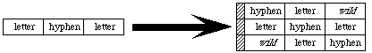

|
|
This technical note describes how to construct auxiliary break tables for use
with the FindWord routine in the Script Manager.
[Nov 01 1987]
|
Constructing break tables
The FindWord algorithm finds word boundaries by determining where
words should not be broken. For example, "re-do" is one word: it should not be
broken at the hyphen. In other words, a sequence of the form: (letter, hyphen,
letter) should not be broken between the first and second or second and third
character. This is called a continuation sequence. The algorithm used by the
FindWord routine allows for continuation sequences of lengths one, two
and three. Examples of a sequence of length two include (letter, letter), or
(number, number). For a length of one, there is only one sequence, consisting
of the characters of type nonBreaking: these characters are never
separated from preceding or following characters.
For most scripts, this information about continuation sequences is packed into
a table for use by the FindWord algorithm. (For complex scripts like
Japanese, a different algorithm is used for portions of the script.) The
default break tables for a given script can be overridden by a user-specified
breakTable parameter, but should only be used for known scripts. That
is, before overriding the breakTable parameter, the programmer should
first check the script of the current font.
A break table consists of two sections, a 256 byte character type table
followed by a character triple table.
The character type table is indexed by the character's ASCII code and contains
one type value for each character. The character types in the table are limited
to values between 1 and 31. There are two distinguishing values: the type
nonBreaking (= 1) indicates that the character is non-breaking; it
always continues a word. The type wild (=0) indicates that the
character may or may not break, depending on information in the character
triple table, as described below. Otherwise, the choice of numbers to
represent character types is completely arbitrary.
For example, the following in MPW Assembler defines character types for use in
a word-selection break table, then sets up a character type table using an
assembly macro (setByte) to store character type values in an array.
(Note that the character types could have been defined with equate definitions
(EQU), rather than using the record structure.) Writing the setByte
macro is left as an exercise to the reader. Note that the break value is the
default. This value is not distinguished, but should have no continuation
sequences.
;============================================================
charWordRec record 0
wild ds.b 1 ; constant! not in char table.
nonbreak ds.b 1 ; constant! non-breaking space.
letter ds.b 1 ; letters.
number ds.b 1 ; digits.
break ds.b 1 ; always breaks.
midLetter ds.b 1 ; a'a.
midLetNum ds.b 1 ; a'a 1'1.
preNum ds.b 1 ; $, etc.
postNum ds.b 1 ; %, etc.
midNum ds.b 1 ; 1,1.
preMidNum ds.b 1 ; .1234.
blank ds.b 1 ; spaces and tabs.
cr ds.b 1 ; add carriage return
endr
;============================================================
with charWordRec
wordTable
dcb.b 256,break
setByte wordTable,nonBreak,$ca
setByte wordTable,letter,('A','Z'),('a','z')('Ä','Ü')
setByte wordTable,letter,'Æ','Ø','Æ','Ø',('À','oe'),'Ÿ'
setByte wordTable,midLetter,'-'
setByte wordTable,midLetNum,$27,'''
setByte wordTable,number,('0','9')
setByte wordTable,preNum,'$','cents','[[sterling]]','[[yen]]'
setByte wordTable,postNum,'%'
setByte wordTable,midNum,','
setByte wordTable,preMidNum,'.'
setByte wordTable,blank,$00,' ',$09
setByte wordTable,cr,$0d
endWith
|
The character triple table is a coded representation of a list of continuation
sequences. It consists of a list of packed one word triples, preceded by a
length word. This length word contains the number of triples minus one. Each
triple contains three character types, either as derived from the
charType table or the special type wild (= zero). The three
types in a triple are packed into fields five bits apiece, with the most
significant bit in the word cleared. The first type in the triple is the
leftmost.
A continuation sequence of length three (xyz) is represented by entering three
triples into the triple list: xyz, *xy, and yz* (where '*' stands for the type
wild, which is always zero).

A continuation sequence of length two (xy) is represented by entering two
triples into this list: *xy, and xy*. A continuation sequence of length one has
no entry in the triple list: the character type is simply
nonBreaking.
Note that the type wild cannot appear as the middle element of a
triple. The words in the triple table must be sorted in ascending numerical
order for future compatibility.
The following is an example of how a character triple table could be coded. The
defSeq macro takes a continuation sequence as a parameter, and enters
a set of triples into an internal array. The dumpSeq macro sorts the
triples, and stores them in the proper order with dc.w commands. Once
again, writing the macros defSeq and dumpSeq is left as an
exercise for the reader.
;============================================================
with charWordRec
defSeq letter,letter
defSeq letter,preMidNum,letter
defSeq letter,midLetter,letter
defSeq letter,midLetNum,letter
defSeq number,number
defSeq number,letter
defSeq number,midNum,number
defSeq number,midLetNum,number
defSeq number,preMidNum,number
defSeq number,postNum
defSeq preNum,number
defSeq preMidNum,number
defSeq blank,blank
defSeq blank,cr
endWith
;============================================================
dc.w ((wordEnd-wordBegin)/2)-1 ; length word.
wordBegin
dumpSeq
wordEnd
|
A series of blanks should generally select as a single word. Make certain,
however, that a carriage return does not continue a word to the right (note how
it has a separate character type from blank for this reason), otherwise word
selection and wrapping do not work properly across paragraphs.
Back to top
Extensions
The values 16-31 in the character type table entry for null ($00) (the first
byte in the character type table) are reserved by Apple for future expansion.
The use of one of these values indicates the presence of a supplementary table
after the triple table.
Back to top
References
The Script Manager
Back to top
Downloadables
|

|
Acrobat version of this Note (160K).
|
Download
|
|